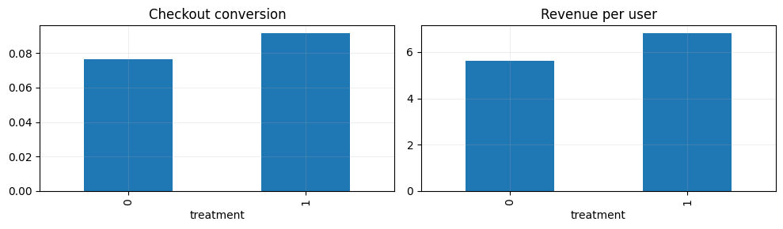
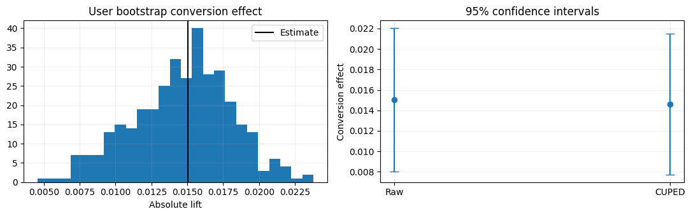

import numpy as np
import pandas as pd
import matplotlib.pyplot as plt
from sklearn.model_selection import train_test_split
SEED = 42
rng = np.random.default_rng(SEED)
plt.rcParams.update({'figure.figsize': (8, 4), 'axes.grid': True, 'grid.alpha': 0.2})Project 09 · A/B Experiment: Checkout Conversion from Scratch
Track: Experimentation
Research / product question: Does a simplified e-commerce checkout improve conversion while protecting revenue and latency?
Learning outcome: Random assignment, SRM checks, difference in proportions, power, CUPED, confidence intervals and ship decision.
Workflow: Data-generating process → raw-data audit → leakage-safe features → from-scratch baseline → model selection / hyperparameter tuning → held-out evaluation → failure analysis.
Synthetic-data disclosure: All records and outcomes are created in this notebook; they do not describe real customers or credit decisions. Ground truth is constructed for teaching. Numerical results are illustrative of this simulator, not estimates of real-world business impact.
Reproducibility: Random seeds are fixed. Run cells top-to-bottom. Install packages from the project-level requirements.txt. CPU execution is supported; deep-learning examples deliberately use small models.
Portfolio standard: fully reproducible, synthetic educational data · explicit evaluation protocol · plots and failure analysis · no claims of production accuracy.
Analyze a user-randomized treatment with a conversion-rate estimand, SRM check, sampling uncertainty, CUPED covariate adjustment and pre-declared latency guardrail.
1. Simulate a randomized online experiment
Users are independently randomized. Each has a pre-experiment activity measure related to conversion and a device segment. Treatment changes true conversion probability; these assumptions are built into the simulator.
# User-randomized treatment, synthetic purchases and pre-treatment covariates.
from scipy.stats import norm,chisquare
n=24000
uid=np.arange(n);D=rng.binomial(1,.5,n);mobile=rng.binomial(1,.62,n)
pre_activity=rng.gamma(2.1,2.0,n)
base=-2.5+.18*(pre_activity-4)-.28*mobile
p0=1/(1+np.exp(-base));p1=1/(1+np.exp(-(base+.20)))
Y=rng.binomial(1,np.where(D==1,p1,p0))
revenue=Y*rng.lognormal(4.2,.45,n)
latency=rng.normal(430+26*D+30*mobile,80,n)
frame=pd.DataFrame({'user_id':uid,'treatment':D,'mobile':mobile,'pre_activity':pre_activity,'purchase':Y,'revenue':revenue,'latency_ms':latency})
print(frame.groupby('treatment')[['purchase','revenue','latency_ms']].mean().round(3).to_string())
fig,ax=plt.subplots(1,2,figsize=(10,3));frame.groupby('treatment').purchase.mean().plot.bar(ax=ax[0],title='Checkout conversion');frame.groupby('treatment').revenue.mean().plot.bar(ax=ax[1],title='Revenue per user');plt.tight_layout();plt.show() purchase revenue latency_ms
treatment
0 0.076 5.604 448.537
1 0.091 6.804 474.885
2. Quality checks, SRM and effect estimate
A Sample Ratio Mismatch check compares treatment counts to the planned 50/50 allocation. Use the original assignment unit for all metric analyses.
# SRM, two-proportion effect and confidence interval.
counts=frame.treatment.value_counts().reindex([0,1]);srm_p=chisquare(counts, f_exp=[n/2,n/2]).pvalue
p_t=frame.loc[frame.treatment==1,'purchase'].mean();p_c=frame.loc[frame.treatment==0,'purchase'].mean()
n1=counts[1];n0=counts[0];se=np.sqrt(p_t*(1-p_t)/n1+p_c*(1-p_c)/n0)
effect=p_t-p_c;z=effect/se;pval=2*norm.sf(abs(z));ci=(effect-1.96*se,effect+1.96*se)
print('SRM p:',round(srm_p,4),'Control/Treatment sample sizes:',counts.to_dict())
print('Conversion effect:',round(effect,4),'95% CI:',tuple(round(x,4) for x in ci),'p:',round(pval,5))SRM p: 0.38 Control/Treatment sample sizes: {0: 11932, 1: 12068}
Conversion effect: 0.015 95% CI: (np.float64(0.008), np.float64(0.0221)) p: 3e-053. Power analysis and CUPED variance reduction
CUPED subtracts a coefficient times the mean-centered pre-treatment covariate. Because the covariate precedes randomization, it cannot be affected by treatment. For clarity, estimate variance reduction and uncertainty at the user level.
# Estimate planning power and CUPED adjustment from pre-treatment activity.
from statsmodels.stats.power import NormalIndPower
# Normal approximation to proportions at baseline p0 and planning MDE.
planning_p=.09;mde=.012;sigma=np.sqrt(2*planning_p*(1-planning_p))
required=NormalIndPower().solve_power(effect_size=mde/sigma,alpha=.05,power=.8,ratio=1)
print('Approximate required users per arm for 1.2pp effect:',round(required))
Xpre=frame.pre_activity.to_numpy();centered=Xpre-Xpre.mean();theta=np.cov(Y,Xpre,ddof=1)[0,1]/np.var(Xpre,ddof=1)
adjusted=Y-theta*centered
frame['cuped_outcome']=adjusted
raw_var=Y.var(ddof=1);cuped_var=adjusted.var(ddof=1)
print('CUPED theta:',round(theta,4),'variance reduction:',round(1-cuped_var/raw_var,3))
def mean_effect_and_ci(values,d):
a=values[d==1];b=values[d==0];effect=a.mean()-b.mean()
s=np.sqrt(a.var(ddof=1)/len(a)+b.var(ddof=1)/len(b))
return effect,(effect-1.96*s,effect+1.96*s)
raw=mean_effect_and_ci(Y,D);cuped=mean_effect_and_ci(adjusted,D)
print('Raw 95% CI',raw,'CUPED 95% CI',cuped)Approximate required users per arm for 1.2pp effect: 17856
CUPED theta: 0.017 variance reduction: 0.032
Raw 95% CI (np.float64(0.015048483223516845), (np.float64(0.00803501920769542), np.float64(0.02206194723933827))) CUPED 95% CI (np.float64(0.01460774176992656), (np.float64(0.007706293839093209), np.float64(0.021509189700759913)))4. Bootstrap and decision table
The treatment is randomized, so user-level bootstrap resamples are appropriate for independently assigned users. Guardrail latency worsens by design; whether the experiment ships depends on a predeclared threshold.
# Cross-check uncertainty using user-level bootstrap.
r=np.random.default_rng(100);control=np.where(D==0)[0];treated=np.where(D==1)[0]
boot=[]
for _ in range(350):
a=r.choice(treated,len(treated),replace=True);b=r.choice(control,len(control),replace=True)
boot.append(Y[a].mean()-Y[b].mean())
boot_ci=np.quantile(boot,[.025,.975]);latency_effect=frame.loc[D==1,'latency_ms'].mean()-frame.loc[D==0,'latency_ms'].mean()
fig,ax=plt.subplots(1,2,figsize=(11,3.5));ax[0].hist(boot,bins=25);ax[0].axvline(effect,color='k',label='Estimate');ax[0].legend();ax[0].set(title='User bootstrap conversion effect',xlabel='Absolute lift');
ax[1].errorbar([0,1],[raw[0],cuped[0]],yerr=[[raw[0]-raw[1][0],cuped[0]-cuped[1][0]],[raw[1][1]-raw[0],cuped[1][1]-cuped[0]]],fmt='o',capsize=5)
ax[1].set(xticks=[0,1],xticklabels=['Raw','CUPED'],ylabel='Conversion effect',title='95% confidence intervals');plt.tight_layout();plt.show()
print('Bootstrap 95% CI:',tuple(np.round(boot_ci,4)),'Latency guardrail change (ms):',round(latency_effect,1))
print('Decision example:', 'Review guardrail before ship' if latency_effect>20 else 'Review conversion and cost for ship')
Bootstrap 95% CI: (np.float64(0.0076), np.float64(0.021)) Latency guardrail change (ms): 26.3
Decision example: Review guardrail before shipWhat the results mean / interview discussion
A/B analysis requires trusted randomization, one primary decision metric and pre-specified guardrails. CUPED can increase precision without changing the randomized estimand. Do not overinterpret post-hoc segment scans or repeatedly peek at fixed-horizon p-values.
Try explaining these without looking at the code:
- What does a p-value not tell you?
- Why is pre-treatment CUPED valid but controlling for post-treatment page views dangerous?
- How would you pre-specify practical significance and latency guardrails?
Limitations and next step: Evaluate on a suitably licensed real-world dataset or stronger simulation with domain shift, logging bias and realistic selection. Never treat synthetic performance as production evidence.
What this project demonstrates, and what it does not
Decision principle: statistical significance is not a launch decision. Calculate absolute lift, confidence interval, cost/latency impact and the cost of mistakes. CUPED covariates must be measured before treatment.
Reproduce: Run All in Jupyter; no private or uploaded data required. For real data, use leakage-safe train/validation/test partitions and respect each dataset license.